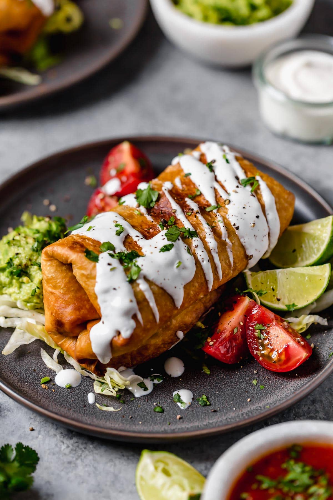

Chimichanga recipe

Description
Ingredients
- Tortilla
- Refried beans
- Ground beef
- Cheddar
- Spices
Steps
- Lay tortilla flat on a clean surface.
- Scoop the refried beans into the middle of the tortilla, then spread it outward in one direction.
- Continue spreading until the rice forms an evenly shaped rectangle down the center.
- Spread the other ingredients, one by one, in even layers on top of the beans.
- Fold the tortilla and roll the chimichanga.
- Fry the chimichanga for 2 minutes in 3-4 inches of oil in a deep pan, then flip and fry on the other side until the chimichanga is evenly gold-brown.